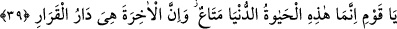

Firavun’un kavmini ise kötü azap kuşatıverdi.
“O îman eden kimse,” Firavun ailesinin mü’min ferdi “dedi ki: Ey kavmim! Sizlere
gösterdiğim deliller husususunda “siz bana uyun, sizi” sahibini maksûda ileten “doğru
yola götüreceğim.”
“Rüşd ve reşâd,” gerek din gerekse dünyaya âid maslahat ve menfaatlara yol bulmak
demektir. Bu ifadede Firavun’un da kavminin de girdikleri yolun yamuk ve sapık bir yol
olduğuna yönelik bir târiz bulunmaktadır. Burada hidâyet olgusunun peygamberlere ve
velîlere uyma şartına bağlanmış olduğuna, ayrıca tıpkı nebîler hidâyete vesîle olduğu
gibi, velîlerin de peygamberine tâbi olmak kaydıyla doğru yola iletebileceğine işaret
edilmektedir. İşte mümin zâtın aşağıdaki ifadesi de böyle bir hidâyettir:
39. Ey kavmim! Şüphesiz bu dünya hayatı, geçici bir eğlencedir. Ama âhiret,
gerçekten kalınacak yurttur.
“Ey milletim! Şüphesiz bu dünya hayatı geçici bir eğlencedir.”
lafzı,
anlamında olup yarar sağlama ve faydalanma, demektir. Ticârî mal anlamında değildir.
Yani, dünya hayatı son derece hızla geçtiği için basit bir istifâde ve azıcık bir
yararlanmadır. Öyle ki koskoca dünyanın ömrü tek bir saat mesâbesinde olduğuna göre,
bir düşünün bakalım tek bir insanın ömrü ne kadar olabilir? Onun yaşama yaygısı kısa
zamanda dürülür ve onun muâşeret defterine iptal çizgisi çekilir.
Şâir der ki:
Taze, canlı ve güzel kokulu olan dünya bahçesiyle gururlanma;
Zira sonbaharın eziyeti hemencecik gelir.
Zaman zaman talihsizlik ve perişanlık rüzgârı eser;
Ne renk ne de koku, bahçeden bir nişan bile bırakmaz.
Muhammed b. Ali Tirmizî (k.s) şöyle der: Dünya hayatı, önceki ümmetlerde de aklı
başında olanlar tarafından hep böyle kötülenmiştir. Dünya peşinde koşanlar ise kadîm
hükemâya göre basit ve önemsiz kimseler olarak görülmüşlerdir. Hangi ümmette bir
mesajcı çıkmışsa, dünyanın peşinde gitmekten, dünyalık biriktirip dünyalığa
meyletmekten sakındırmıştır. Baksanıza Firavun ailesinin mü’mini ne diyor: “Siz bana
uyun, sizi doğru yola götüreceğim.” Bu sözü duyanlar, “Peki nedir bu doğru yol?”
diye sorduklarını farzederek şöyle devam ediyor: “Şüphesiz bu dünya hayatı...” Demek
istiyor ki, “gönlünüzde dünya sevgisi ve dünyalık kazanma hırsı bulunduğu sürece doğru